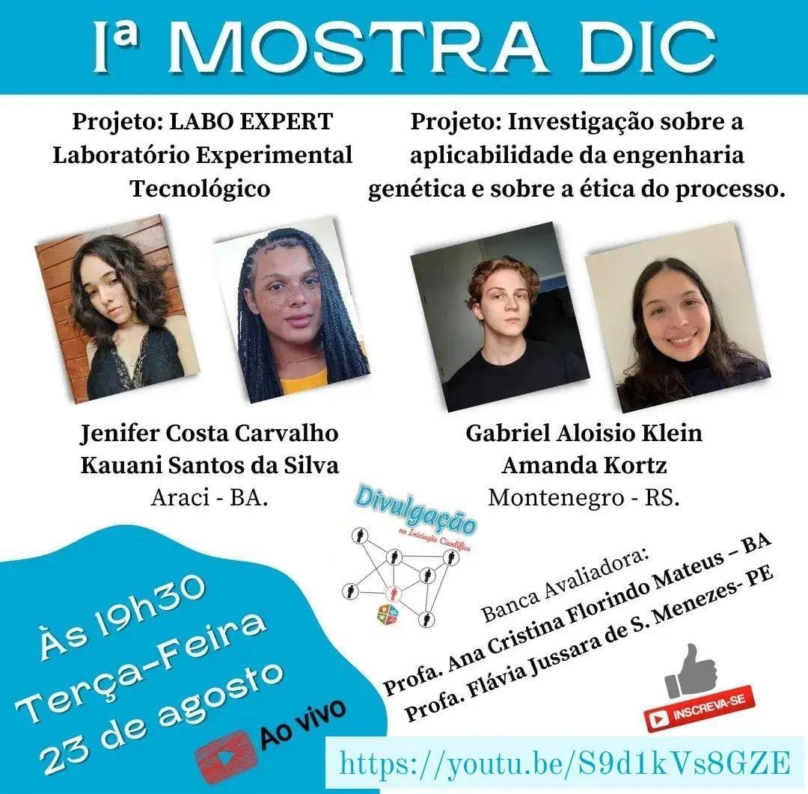

Projetos:
No ano de 2022, tive a oportunidade de participar de um projeto científico chamado Labo Expert (Laboratório Experimental Tecnológico), no qual apresentei na Feira de ciências da 1ª Amostra DIC em Agosto de 2022.
No ano de 2022, tive a oportunidade de participar de um projeto científico chamado Labo Expert (Laboratório Experimental Tecnológico), no qual apresentei na Feira de ciências da 1ª Amostra DIC em Agosto de 2022.
Um dos desafios do meu projeto era como tornar equipamentos laboratoriais que eram caros e de difícil disponibilidade, acessíveis e sustentáveis.
Nossa solução foi criar então os equipos com materiais reutilizáveis, ou seja, algo que seria jogado fora, foi reaproveitado ajudando o meio ambiente. Nossa principal propósta era mostrar que era possível criar equipamentos laboratoriais recicláveis com a mesma funcionalidade que um praticamente novo.
Clique na imagem e assista o vídeo da minha apresentação:
